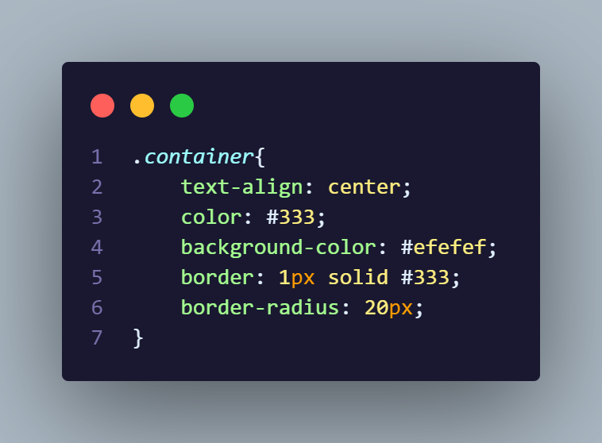

Ini adalah cara untuk mengaktifkan class dan id agar bisa diatur oleh file cssnya.
Kemudian, ini adalah cara untuk memanggil class yang ada di file html dengan tanda titik (.) dan nama class agar bisa diatur oleh file cssnya.
Selanjutnya, ini adalah cara untuk memanggil id yang ada di flie html dengan tanda hashtag (#) dan nama id agar bisa diatur oleh file cssnya.
Lalu, ini adalah cara untuk memanggil elemen-elemen yang ada dalam div dengan class.
Dan, ini adalah cara untuk memanggil elemen-elemen yang ada dalam div dengan id.
Grid Layout pada CSS adalah sebuah style yang dimana kita atur ukuran element tujuan agar sesuai dengan besar-kecilnya layar, berikut adalah contoh gambar cara mengaturnya.
Mungkin disini kalian bartanya "Bang kok makenya persen?", nah mari saya jelaskan!, Bedanya pixel (px) dan persen (%) adalah kalo pixel (px) dia mengatur sesuai berapa besar apa yang kita mau, sedangkan kalo kita memakai persen (%) itu otomatis akan sesuai pada ukuran content yang sudah kalian atur.
Ada juga nih Responsive Layout, Responsive Layout pada CSS adalah style CSS yang bisa mengatur semua kesesuaian pada elemen agar sesuai dengan layar Hp dan Komputer, "Loh bang emang kita bisa tau kalo itu sesuai ama layar Hp?", mari kita perhatikan gambar-gambar yang ada di bawah ini.
Ini adalah cara untuk melihat ukuran website layar Hp.
Jangan lupa untuk atur ukuran menjadi 480 x 854.
Berikutnya, ini adalah cara untuk mengatur responsive layout pada website, yang pertama-tama kita memerlukan grid layout terlebih dahulu di setiap elemen, setelah itu perhatikan gambar di bawah ini.
Setelah ini, kalian hanya mempelajari nama style-style CSS di Coding List
Kembali